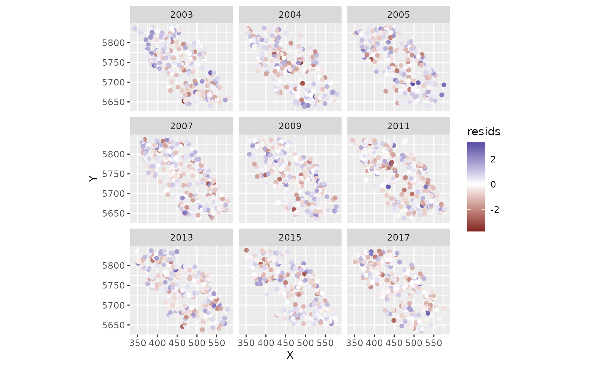
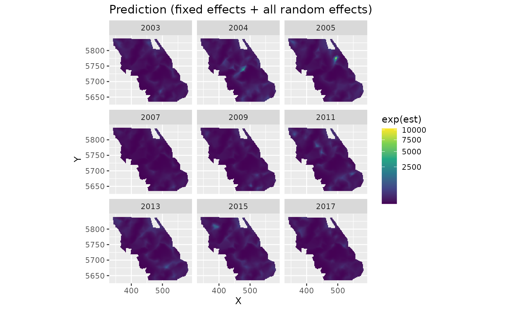
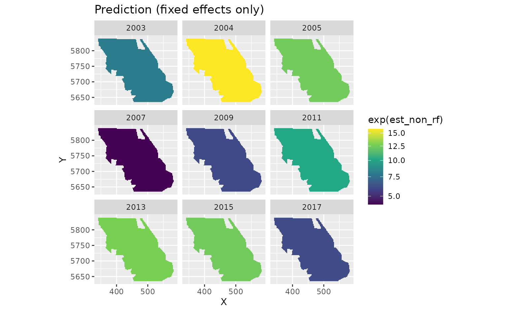
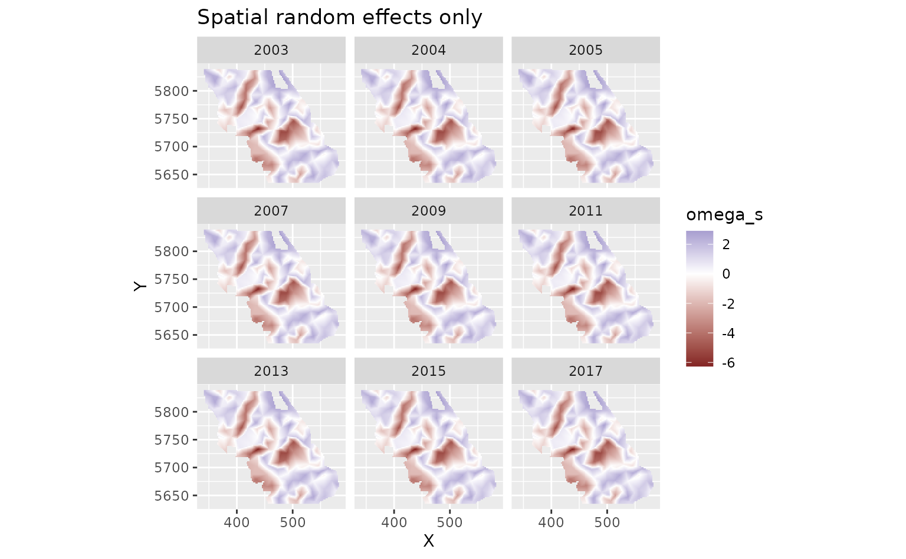
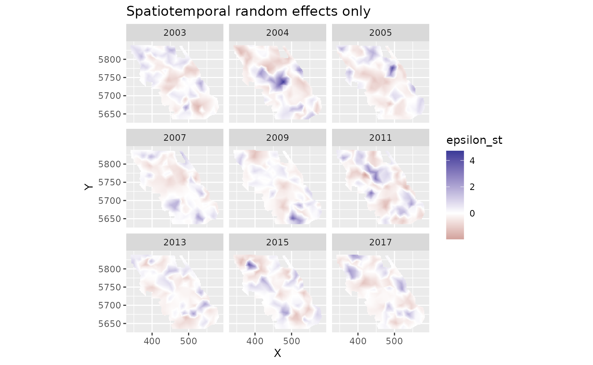
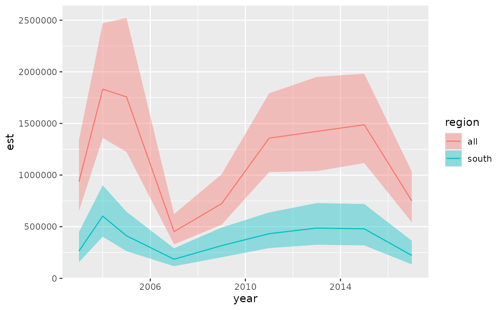

Index standardization with sdmTMB
2025-11-22
Source:vignettes/articles/index-standardization.Rmd
index-standardization.RmdIf the code in this vignette has not been evaluated, a rendered version is available on the documentation site under ‘Articles’.
Let’s perform index standardization with the built-in data for Pacific cod.
- The density units should be kg/km2.
- Here, X and Y are coordinates in UTM zone 9.
glimpse(pcod)
#> Rows: 2,143
#> Columns: 12
#> $ year <int> 2003, 2003, 2003, 2003, 2003, 2003, 2003, 2003, 2003, 20…
#> $ X <dbl> 446.4752, 446.4594, 448.5987, 436.9157, 420.6101, 417.71…
#> $ Y <dbl> 5793.426, 5800.136, 5801.687, 5802.305, 5771.055, 5772.2…
#> $ depth <dbl> 201, 212, 220, 197, 256, 293, 410, 387, 285, 270, 381, 1…
#> $ density <dbl> 113.138476, 41.704922, 0.000000, 15.706138, 0.000000, 0.…
#> $ present <dbl> 1, 1, 0, 1, 0, 0, 0, 0, 0, 1, 0, 0, 0, 0, 0, 0, 0, 0, 0,…
#> $ lat <dbl> 52.28858, 52.34890, 52.36305, 52.36738, 52.08437, 52.094…
#> $ lon <dbl> -129.7847, -129.7860, -129.7549, -129.9265, -130.1586, -…
#> $ depth_mean <dbl> 5.155194, 5.155194, 5.155194, 5.155194, 5.155194, 5.1551…
#> $ depth_sd <dbl> 0.4448783, 0.4448783, 0.4448783, 0.4448783, 0.4448783, 0…
#> $ depth_scaled <dbl> 0.3329252, 0.4526914, 0.5359529, 0.2877417, 0.8766077, 1…
#> $ depth_scaled2 <dbl> 0.11083919, 0.20492947, 0.28724555, 0.08279527, 0.768440…First we will create our SPDE mesh. We will use a relatively course
mesh for a balance between speed and accuracy in this vignette
(cutoff = 10 where cutoff is in the units of X and Y (km
here) and represents the minimum distance between points before a new
mesh vertex is added). You will likely want to use a higher resolution
mesh for applied scenarios. You will want to make sure that increasing
the number of knots does not change the conclusions.

Let’s fit a GLMM. Note that if you want to use this model for index
standardization then you will likely want to include
0 + as.factor(year) or -1 + as.factor(year) so
that there is a factor predictor that represents the mean estimate for
each time slice.
m <- sdmTMB(
data = pcod,
formula = density ~ 0 + as.factor(year),
time = "year", mesh = pcod_spde, family = tweedie(link = "log"))We can inspect randomized quantile residuals:
pcod$resids <- residuals(m) # randomized quantile residuals
# Also see residuals(..., type = "mle-mcmc") which are better but slower
hist(pcod$resids)

ggplot(pcod, aes(X, Y, col = resids)) + scale_colour_gradient2() +
geom_point() + facet_wrap(~year) + coord_fixed()
Now we want to predict on a fine-scale grid on the entire survey
domain. There is a grid built into the package for Queen Charlotte Sound
named qcs_grid. Our prediction grid also needs to have all
the covariates that we used in the model above.
glimpse(qcs_grid)
#> Rows: 7,314
#> Columns: 5
#> $ X <dbl> 456, 458, 460, 462, 464, 466, 468, 470, 472, 474, 476, 4…
#> $ Y <dbl> 5636, 5636, 5636, 5636, 5636, 5636, 5636, 5636, 5636, 56…
#> $ depth <dbl> 347.08345, 223.33479, 203.74085, 183.29868, 182.99983, 1…
#> $ depth_scaled <dbl> 1.56081222, 0.56976988, 0.36336929, 0.12570465, 0.122036…
#> $ depth_scaled2 <dbl> 2.436134794, 0.324637712, 0.132037240, 0.015801659, 0.01…We can replicate our grid across all years:
grid_yrs <- replicate_df(qcs_grid, "year", unique(pcod$year))Now make the predictions on new data.
predictions <- predict(m, newdata = grid_yrs, return_tmb_object = TRUE)Let’s make a small function to make maps.
plot_map <- function(dat, column) {
ggplot(dat, aes(X, Y, fill = {{ column }})) +
geom_raster() +
facet_wrap(~year) +
coord_fixed()
}There are four kinds of predictions that we get out of the model. First we will show the predictions that incorporate all fixed effects and random effects:
plot_map(predictions$data, exp(est)) +
scale_fill_viridis_c(trans = "sqrt") +
ggtitle("Prediction (fixed effects + all random effects)")
We can also look at just the fixed effects, here year:
plot_map(predictions$data, exp(est_non_rf)) +
ggtitle("Prediction (fixed effects only)") +
scale_fill_viridis_c(trans = "sqrt")
We can look at the spatial random effects that represent consistent deviations in space through time that are not accounted for by our fixed effects. In other words, these deviations represent consistent biotic and abiotic factors that are affecting biomass density but are not accounted for in the model.
plot_map(predictions$data, omega_s) +
ggtitle("Spatial random effects only") +
scale_fill_gradient2()
And finally we can look at the spatiotemporal random effects that represent deviation from the fixed effect predictions and the spatial random effect deviations. These represent biotic and abiotic factors that are changing through time and are not accounted for in the model.
plot_map(predictions$data, epsilon_st) +
ggtitle("Spatiotemporal random effects only") +
scale_fill_gradient2()
When we ran our predict.sdmTBM() function, it also
returned a report from TMB in the output because we included
return_tmb_object = TRUE. We can then run our
get_index() function to extract the total biomass
calculations and standard errors.
We will need to set the area argument to 4
km2 since our grid cells are 2 km x 2 km. If some grid cells
were not fully in the survey domain (or were on land), we could feed a
vector of grid areas to the area argument that matched the
number of grid cells.
index <- get_index(predictions, area = 4, bias_correct = TRUE)
ggplot(index, aes(year, est)) + geom_line() +
geom_ribbon(aes(ymin = lwr, ymax = upr), alpha = 0.4) +
xlab('Year') + ylab('Biomass estimate (kg)')
These are our biomass estimates:
mutate(index, cv = sqrt(exp(se^2) - 1)) %>%
select(-log_est, -se) %>%
knitr::kable(format = "pandoc", digits = c(0, 0, 0, 0, 2))| year | est | lwr | upr | se_natural | type | cv |
|---|---|---|---|---|---|---|
| 2003 | 936176 | 653699 | 1340716 | 660600.7 | index | 0 |
| 2004 | 1832130 | 1359020 | 2469943 | 1352139.9 | index | 0 |
| 2005 | 1757227 | 1224189 | 2522360 | 1331654.2 | index | 0 |
| 2007 | 452112 | 328786 | 621698 | 317355.0 | index | 0 |
| 2009 | 722982 | 518713 | 1007692 | 499241.8 | index | 0 |
| 2011 | 1357885 | 1028851 | 1792147 | 992261.7 | index | 0 |
| 2013 | 1422648 | 1037721 | 1950358 | 1015518.9 | index | 0 |
| 2015 | 1487473 | 1116301 | 1982062 | 1073671.5 | index | 0 |
| 2017 | 750051 | 543622 | 1034867 | 528911.2 | index | 0 |
We can also calculate an index for part of the survey domain. We’ll
make an index for everything south of UTM 5700 by subsetting our
prediction grid. For more complicated spatial polygons you could
intersect the polygon on the prediction grid using something like
sf::st_intersects().
qcs_grid_south <- grid_yrs[grid_yrs$Y < 5700, ]
predictions_south <- predict(m, newdata = qcs_grid_south,
return_tmb_object = TRUE)
index_south <- get_index(predictions_south, area = 4, bias_correct = TRUE)
head(index_south)
#> year est lwr upr log_est se se_natural type
#> 1 2003 264679.9 156368.9 448013.9 12.48628 0.2685270 185738.6 index
#> 2 2004 602466.8 403037.0 900577.8 13.30879 0.2051079 436313.4 index
#> 3 2005 411739.0 263138.9 644256.8 12.92814 0.2284265 289069.4 index
#> 4 2007 184945.7 117598.4 290861.9 12.12782 0.2310178 130549.1 index
#> 5 2009 316483.8 203600.9 491952.5 12.66503 0.2250603 226418.1 index
#> 6 2011 432243.6 292909.8 637857.0 12.97674 0.1985366 328539.5 indexWe can visually compare the two indexes:
mutate(index, region = "all") %>%
bind_rows(mutate(index_south, region = "south")) %>%
ggplot(aes(year, est)) +
geom_line(aes(colour = region)) +
geom_ribbon(aes(ymin = lwr, ymax = upr, fill = region), alpha = 0.4)